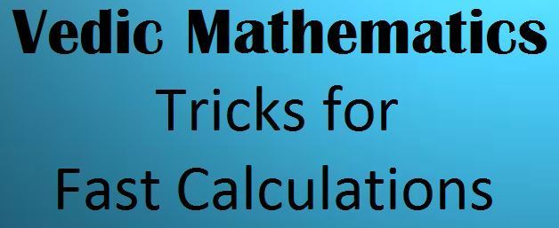

Vedic Maths!

What is Vedic Maths?
Vedic Mathematics is the name given to the ancient system of Indian Mathematics
which was rediscovered from the Vedas between 1911 and 1918 by Sri Bharati Krsna
Tirthaji (1884-1960). According to his research all of mathematics is based on sixteen
Sutras, or word-formulae. For example, 'Vertically and Crosswise` is one of these
Sutras. These formulae describe the way the mind naturally works and are therefore a
great help in directing the student to the appropriate method of solution.
If you are in 10th standard . There is a very useful thing
at the last of this webpage.
Click to go at last of this webpage
If you are unable to memorise the trignomtery values.
Then click the image at the last of this webpage.
Steps to perform this trick.
10th to 99th, any table,
very easy method to learn.
I didn't know this. Because it was not taught to us in school.
How to write Table of any two digit number?
For example Table of *87*
First write down *table of 8 then write down table of 7 beside it*
8 7 87
16 14 (16+1) 174
24 21 (24+2) 261
32 28 (32+2) 348
40 35 (40+3) 435
48 42 (48+4) 522
56 49 (56+4) 609
64 56 (64+5) 696
72 63 (72+6) 783
80 70 (80+7) 870
Now table of 38
3 8 38
6 16 (6+1) 76
9 24 (9+2) 114
12 32 (12+3) 152
15 40 (15+4) 190
18 48 (18+4) 228
21 56 (21+5) 266
24 64 (24+6) 304
27 72 (27+7) 342
30 80 (30+8) 380
33 88 (33+8) 418
36 96 (36+9) 456
Now table of 92
9 2 92
18 4 184
27 6 276
36 8 368
45 10 (45+1)460
54 12 (54+1)552
63 14 (63+1)644
72 16 (72+1)736
81 18 (81+1)828
90 20 (90+2)920
99 22 (99+1)1012
108 24 (108+2)1104
This way one can make Tables from10 to 99
Share & teach children
This is Vedic Mathematics!!.